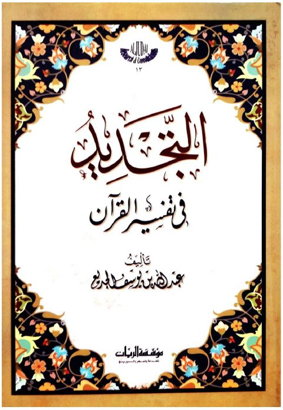

Downloads need an internet connection.
التجديد في تفسير القرآن
Authors: عبد الله بن يوسف الجديع
Publishers: مؤسسة الريان
▫️ العنوان: التجديد في تفسير القرآن ▪️ المؤلف: #عبد_الله_بن_يوسف_الجديع ▫️ الناشر: #مؤسسة_الريان_للطباعة_والنشر ▪️ تاريخ النشر: 1446هـ 2025م ▫️ بلد النشر: بيروت، #لبنان ▪️ الطبعة: 1 ▫️ عدد الأجزاء: 1 ▪️ الصفحات: 92 ▫️ نوع الوعاء: #كتاب ▪️ التصنيف الرئيسي: #التفسير_وعلوم_القرآن ۪